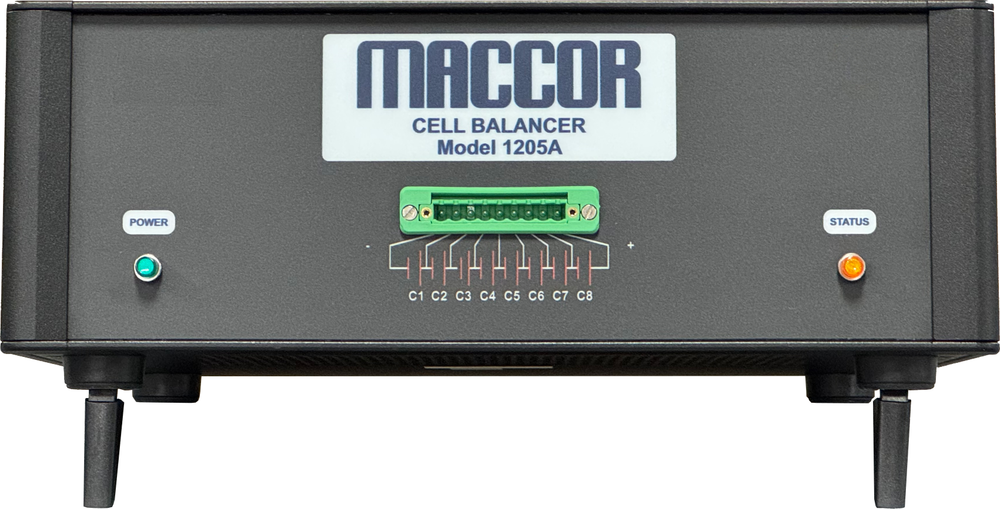

Cell Balancer

Model 1205A
Simultaneously charge and discharge individual cells to achieve precise pack balancing. Seamlessly integrates with Maccor battery test systems or operates independently through Ethernet-based control.